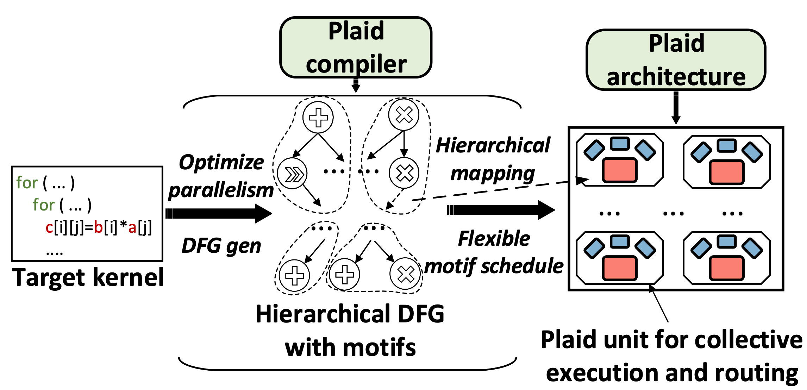
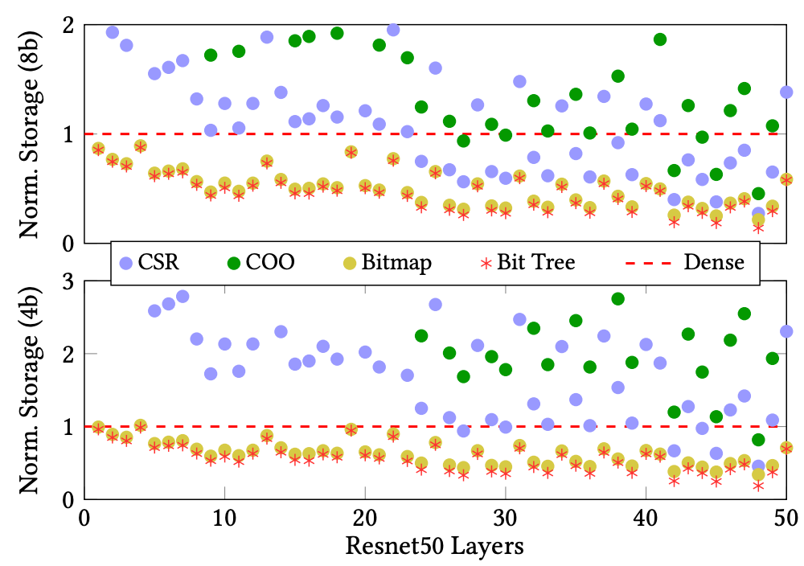

Canon
Canon is a data-driven parallel architecture that bridges the gap between highly specialized and fully programmable architectures. It introduces dynamic execution orchestration, where programmable finite-state machines translate runtime data into control, enabling fine-grained adaptation to irregular or sparse workloads.
Combined with time-lapsed SIMD execution to amortize control overhead, Canon sustains high utilization and deterministic performance across diverse kernels. Canon matches or exceeds the performance of domain-specific accelerators in their own specialization domains, including dense, structured, and unstructured sparse workloads, while retaining the flexibility of a general purpose architecture.
Key Innovations
- Dynamic execution orchestration via programmable FSMs
- Time-lapsed SIMD execution for control overhead reduction
- Adaptation to irregular and sparse workloads
- Deterministic performance across diverse kernels

Plaid
Plaid is a novel Coarse-Grained Reconfigurable Array (CGRA) architecture and compiler that aligns compute and communication provisioning to overcome inefficiencies in existing CGRAs. Plaid identifies and exploits recurring dataflow motifs within applications to enable collective execution and routing, significantly improving hardware utilization.
By integrating a hierarchical on-chip network and motif-aware compiler, Plaid achieves a 43% power reduction and 46% area savings compared to high-performance spatio-temporal CGRAs, while maintaining performance and generality. Against energy-efficient spatial CGRAs, Plaid delivers 1.4× higher performance and 48% lower area. Plaid is a step toward balanced, general-purpose, and energy-efficient reconfigurable computing at the edge.
Key Achievements
- 43% power reduction vs. high-performance CGRAs
- 46% area savings while maintaining performance
- 1.4× higher performance than spatial CGRAs
- Hierarchical on-chip network design
- Motif-aware compiler optimization

ZeD
ZeD develops techniques for efficiently handling the packing, storage, retrieval, and processing of variably sparse matrices in modern machine learning workloads. The work identifies fundamental limitations of prior compression techniques, showing how coordinate-based formats become increasingly inefficient as ML arithmetic precision decreases, due to overwhelming metadata overheads.
ZeD addresses this through a hierarchical bit-tree compression format and zero-detection hardware, enabling compact representation and dynamic zero skipping with minimal hardware cost. Furthermore, by analyzing sparsity patterns and reorganizing matrix rows based on their similarity, ZeD significantly enhances memory reuse. ZeD demonstrates a 3.2× improvement in performance per area over state-of-the-art solutions across a spectrum of ML workloads characterized by wide-ranging sparsities.
Technical Innovations
- Hierarchical bit-tree compression format
- Zero-detection hardware with minimal overhead
- Dynamic zero skipping capability
- 3.2× performance/area improvement
- Optimized for variable sparsity patterns

SWAT
SWAT is a scalable and energy-efficient FPGA-based accelerator designed to optimize window attention-based Transformer models. SWAT addresses the inefficiency of sliding window attention which reduces attention complexity from quadratic to linear but misaligns with traditional accelerator architectures by employing a dataflow-aware, input-stationary design that maximizes data reuse and minimizes redundant computation.
Through innovations like row-major dataflow, kernel fusion, and FIFO-managed buffering, SWAT aligns computation with the distributed memory and logic resources of FPGAs. The result is a 22× latency reduction and 5.7× energy efficiency improvement over baseline FPGA accelerators, and up to 15× higher energy efficiency than GPU-based implementations, making SWAT a powerful and scalable solution for long-context Transformer workloads across NLP and vision tasks.
Performance Gains
- 22× latency reduction vs. baseline FPGAs
- 5.7× energy efficiency improvement
- 15× higher efficiency than GPU implementations
- Row-major dataflow optimization
- Kernel fusion and FIFO-managed buffering
- Scalable for long-context Transformers